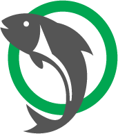

Thames River Association
TRAA Index
Welcome to the TRAA
Dedication Today for Tomorrow
“For the enhancement, protection and promotion of a viable,
multi-species fishery within the Thames River watershed.”
About the TRAA
About content
Protect, enhance and regenerate a viable, multi-species, year-round fishery.
About content
Breed, relocate and stock to re-establish or augment appropriate species of fish.
About content
Promote and participate in environmental clean-up, pollution control and rehabilitation.
About content
Promote environmentally sound sport fishing practices.
About content
Form partnerships with community businesses, government agencies, special interest groups, landowners, and other stakeholders in the Thames River watershed.
About content
Increase public awareness of the unique diversity of the Thames River Watershed, its challenges, its recreational opportunities and its vital importance to our community.
Membership
MEMBERSHIPS ARE DUE!
BE A TRAA MEMBER FOR A WHOLE YEAR FOR ONLY $25.00
Your membership also adds another voice to our efforts in protecting and enhancing aquatic habitats in the London & area community.
Projects

This is what sets the TRAA apart from other clubs and organizations. You'll find us right in the water clearing obstructions from streams, measuring returning salmonids & taking scale samples for DNA analysis, education through trout hatchery tours & stream walks, being a voice for the Thames River watershed & its inhabitants and the list goes on.
Events

Upcoming Events - Rod Building
7:00PM - Mondays, February 18 through March 11, 2019.
This opportunity is open only to current members of the TRAA, WOFGPA and/or FCFFC.
Family Fishing Day
This event has become another TRAA tradition. Members have been helping the Fanshawe Campers Association with the Family Fishing Day for many years now.
See moreTRAA Presented the Film
If you haven't already done so, please take a moment to Click Here to review and consider signing & sharing our petition to the City of London to encourage them to decommission Springbank Dam.
See more
Trout Release
The trout hatchery is now idle and will undergo some upgrades over the summer in addition to the regular yearly maintenance. If you'd like to get in on this and other TRAA activities just contact us.
See more
Stream Habitat Work Party
A few TRAA members cleared a number of fallen= trees and other blockages on October 13th. Click the link to see a video make by Dan Shinkelshoek.
See more
TRAA Project Days
TRAA members have been hard at it all through the late summer and fall making the Keith Wales Memorial Hatchery more accessible, safer and esthetically pleasing.
See moreContact Us
If you're with a like-minded organization or group looking for more information on the TRAA and its activities or if you're an individual who would like to become involved with the activities undertaken by the TRAA
Come and talk to us at a TRAA General Meeting
The TRAA meets every second Wednesday of each month. We always try to get the meetings started by 7:00pm so try to be there a few minutes beforehand. The venue is the Western Ontario Fish & Game Protective Association's clubhouse located just east of the Dearness Home on Southdale Road (East), on the North side of Southdale Road. The address is 790 Southdale Road East, London, Ontario.
Contact Form
SEND US A MESSAGE
Social Media Section